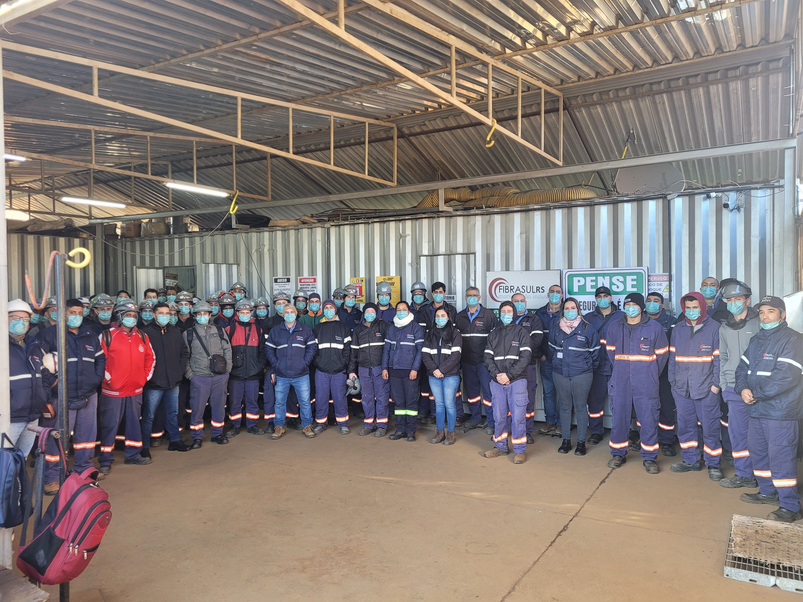
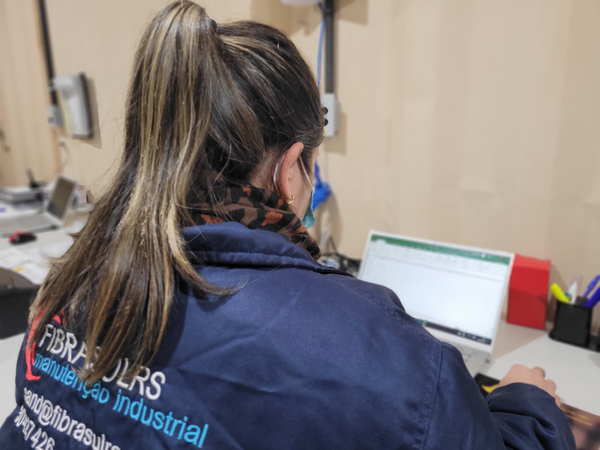

Menu
Home
Serviços
Infraestrutura
Equipe


Slide 1 do carrosel
Slide 2 do carrosel
Slide 3 do carrosel
O que podemos fazer por você?
escolha qualidade e segurança, escolha Fibrasul!
Principais Serviços